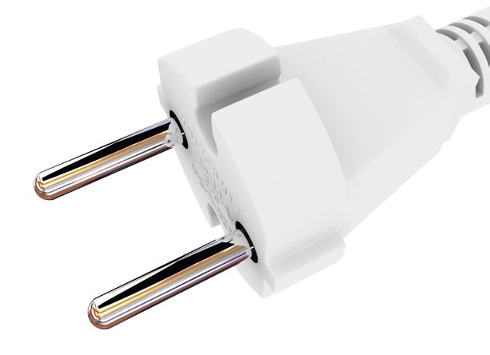

Siehe 2.21 "Unternehmer"
im Sinne dieser DGUV Information sind alle Gegenstände, die als Ganzes oder in einzelnen Teilen dem Anwenden elektrischer Energie (z. B. Gegenstände zum Erzeugen, Fortleiten, Verteilen, Speichern, Messen, Umsetzen und Verbrauchen) oder dem Übertragen, Verteilen und Verarbeiten von Informationen (z. B. Gegenstände der Fernmelde- und Informationstechnik) dienen.
umfasst alle Maßnahmen, die der Arbeitgeber/Unternehmer zu treffen hat, damit den Beschäftigten ausschließlich sichere und für den vorgesehenen Verwendungszweck geeignete Anlagen und Betriebsmittel zur Verfügung gestellt werden.
ist der erste Arbeitsgang bei jeder Prüfung. Durch bewusstes, kritisches Betrachten wird festgestellt, ob das Prüfobjekt äußerlich erkennbare, die Sicherheit beeinträchtigende Mängel aufweist.
Elektrische Anlagen werden durch Zusammenschluss elektrischer Betriebsmittel gebildet.
ist der Oberbegriff, unter dem in erster Linie alle Maßnahmen zum Schutz gegen die Gefahren durch elektrische Durchströmung des menschlichen Körpers (Schutz gegen gefährliche Körperströme nach VDE 0100-410) oder durch Folgen von Störlichtbögen verstanden werden.
ist eine Person, die aufgrund ihrer fachlichen Ausbildung, Kenntnisse und Erfahrungen sowie Kenntnis der einschlägigen Bestimmungen die ihr übertragenen Arbeiten beurteilen und mögliche Gefahren erkennen kann (DGUV Vorschrift 3 und 4; VDE 0105-100).
ist eine Person, die durch eine Elektrofachkraft über die ihr übertragenen Aufgaben und die möglichen Gefahren bei unsachgemäßem Verhalten unterrichtet und erforderlichenfalls angelernt sowie über die notwendigen Schutzeinrichtungen, persönlichen Schutzausrüstungen und Schutzmaßnahmen unterwiesen wurde (DGUV Vorschrift 3 und 4; VDE 0105-100).
ist ein Arbeitsgang bei einer Prüfung, der in Abhängigkeit von der Art des Prüfobjekts und der Funktion seiner Bauteile erforderlich sein kann. Mit ihm wird durch Betätigen, Belasten mit der Hand (Handprobe) oder im Zusammenhang mit dem Betreiben des Prüfobjekts (Funktionsprobe) festgestellt, ob die der Sicherheit dienenden Bauteile bestimmungsgemäß funktionieren.
ist das prozentuale Verhältnis auftretender Mängel innerhalb einer gegebenen Anzahl von Prüfungen in einem betrachteten Bereich. Die Bedingungen müssen dabei vergleichbar sein, z. B. Baustelle, Werkstatt, Verwaltung.
bezeichnet die Möglichkeit eines Schadens oder einer gesundheitlichen Beeinträchtigung, hervorgerufen durch einen von außen einwirkenden elektrischen Strom durch den menschlichen Körper.
sind solche, die aufgrund ihrer Verwendung während des Betriebes in der Hand gehalten werden.
ist ein Arbeitsgang einer Prüfung, der in Abhängigkeit von der Art des Prüfobjekts und der Prüfaufgabe erforderlich sein kann. Mit ihm werden mit Hilfe von Messeinrichtungen bestimmte Eigenschaften oder Merkmale des Prüfobjekts festgestellt, die durch Besichtigen nicht oder nicht immer erkannt werden können, jedoch zur Beurteilung der Sicherheit erforderlich sind. Das Bewerten der Messergebnisse gehört zum Messen.
sind elektrische Betriebsmittel, die während des Betriebes bewegt oder leicht von einem Platz zum anderen gebracht werden können, während sie an den Versorgungsstromkreis angeschlossen sind. Dazu zählen z. B. handgeführte Elektrowerkzeuge, -motorgeräte, -wärmegeräte, Leuchten, Leitungsroller, Verlängerungsleitungen, Tischsteckdosen, Geräteanschlussleitungen, Netzgeräte, Ladegeräte, Trenn-/Kleinspannungstransformatoren, Geräte der Unterhaltungselektronik sowie der elektrischen Informationstechnik, einschließlich Fernmeldegeräte und elektrische Büromaschinen, Laborgeräte, Mess-, Steuer- und Regelgeräte.
ist der Zeitraum bis zur nächsten wiederkehrenden Prüfung.
ist eine im Rahmen der Prüfung zu bewertende elektrische Anlage oder ein elektrisches Betriebsmittel.
ist der in dieser DGUV Information gewählte Oberbegriff der für die Durchführung der Prüfung und die Bewertung der Ergebnisse verantwortlichen Person. Je nach anzuwendender Prüfgrundlage kann es sich um eine "Zur Prüfung befähigte Person" (siehe 2.24) und/oder um eine "Elektrofachkraft" (siehe 2.7) handeln.
ist die Ermittlung des Ist-Zustandes eines Prüfobjekts, der Vergleich des Ist-Zustandes mit dem Soll-Zustand sowie die Bewertung der Abweichung des Ist-Zustandes vom Soll-Zustand.
Radio Frequency Identification bedeutet im Deutschen Identifizierung mit Hilfe von elektromagnetischen Wellen. Es ermöglicht die automatische Identifizierung von Gegenständen (Betriebsmittel) und erleichtert damit erheblich die Erfassung und Speicherung von Daten. Im Zusammenhang mit Prüfungen werden sogenannte "Transponder" mit Betriebsmitteln fest verbunden. Sie stellen in diesem System die Träger der zugeordneten Daten dar und können üblicherweise drahtlos ausgelesen werden.
sind solche, deren Standort verändert werden kann und die bei bestimmungsgemäßer Anwendung nicht in der Hand gehalten werden. Diese Betriebsmittel werden auf Grund ihrer Verwendung und im Rahmen der Gefährdungsbeurteilung wie ortsveränderliche elektrische Betriebsmittel behandelt, z. B. Baustellenkreissäge, Baustromverteiler, mobiler Stromerzeuger.
ist derjenige, auf dessen Weisung und Rechnung das Unternehmen handelt und dem das Ergebnis unmittelbar zum Vor- oder Nachteil gereicht (siehe SGB VII § 136 Abs. 3). Unternehmer ist, wer das Risiko trägt, die Unternehmensziele bestimmt sowie die Personal- und Sachmittelhoheit besitzt. Der Unternehmer trägt die Gesamtverantwortung, also auch die für den Arbeitsschutz. Neben dem Unternehmer können auch
verantwortlich sein.
Nachgeordnete Führungskräfte und Beauftragte können nur im Rahmen der schriftlich übertragenen Aufgaben und Befugnisse Verantwortung tragen (siehe auch § 13 "Pflichtenübertragung" DGUV Vorschrift 1).
In dieser Schrift wird der Begriff "Unternehmer" dem im staatlichen Arbeitsschutzrecht verwendeten Begriff "Arbeitgeber" gleichgesetzt.
umfasst alle Tätigkeiten, wie Erproben, Ingangsetzen, Stillsetzen, Gebrauch, Instandsetzung und Wartung, Prüfung, Durchführung von Sicherheitsmaßnahmen bei Betriebsstörungen, Um- und Abbau sowie Transport.
sichern den Erhalt des ordnungsgemäßen Zustands verwendeter elektrischer Anlagen und Betriebsmittel. Diese sollen Mängel aufdecken, die Gefährdungen hervorrufen können. Die Prüfungen finden in festzulegenden Prüffristen statt.
für die Prüfung elektrischer Betriebsmittel ist eine Elektrofachkraft, die durch ihre elektrotechnische Fachausbildung, mindestens einjährige Berufserfahrung und ihre zeitnahe berufliche Tätigkeit über die für die jeweilige Prüftätigkeit erforderlichen Fachkenntnisse verfügt.
